Gracias por utilizar nuestro sistema. Si usted tiene alguna pregunta que están más allá del alcance de esta ayuda, por favor no dude en enviar por correo electrónico a través de mi formulario de contacto página de usuario aquí. ¡Muchas gracias!
Para ejecutar este sistema se necesitan los siguientes requisitos como minimo
Nota: Como Recondacion Personal Utilizar XAMPP Ya Que Es Muy Facil De Instalar Y Configurar
<?php $hostname_hso = "SERVIDOR"; $database_hso = "NOMBRE_DB"; $username_hso = "USUARIO"; $password_hso = "PASSWORD"; $hso = mysql_pconnect($hostname_hso, $username_hso, $password_hso) or trigger_error(mysql_error(),E_USER_ERROR); ?>
2. Abrir el archivo .htaccess con su editor de preferencia y sustituir la siguiente url por la ur del servidor en este caso se esta corriendo en un servidor local por lo tanto quedaria asi
<Files ~ "^\.(htaccess|htpasswd)$"> deny from all </Files> Options Indexes ErrorDocument 403http://localhost/HSO/403.php ErrorDocument 404http://localhost/HSO/404.php order deny,allow
Una vez iniciamos sesion y estemos dentro del sistema podremos ver el escritorio principal el cual esta compuesto de 4 secciones.
1. notificaciones de las ultimas 4 notas creadas por el usuario en curso
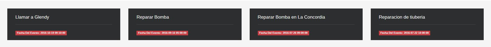
2. Mapa o esctructura grafica de los sectores en este mapa se pueden identificar los puntos rojos, estos punto al hacer clik sobre ellos se abrira una ventana emergente mostrandonos la informacion de dicha aera o sector
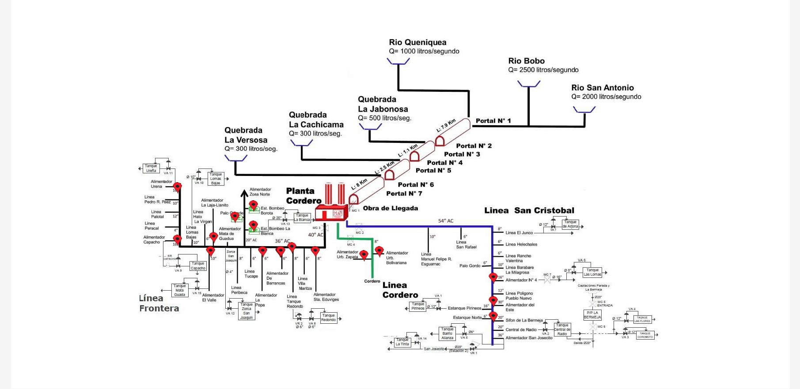
3. En esta seccion se encuentran la tareas asignada, las tareas que se muestran aca son las 4 ultimas tareas que otros usuarios del sistema me han asignado
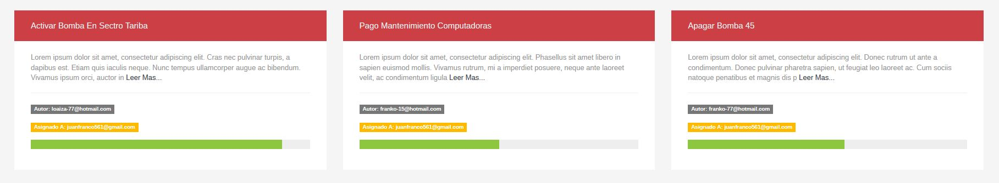
4. En esta seccion se encuentra los ultimos registros que se han generado por el sistema de bonbeo, es decir todos los datos que recoje el sistema como hora, fecha, cantida litros, operario.
-tambie se muestra el calendario para tener claro los eventos y notas creadas
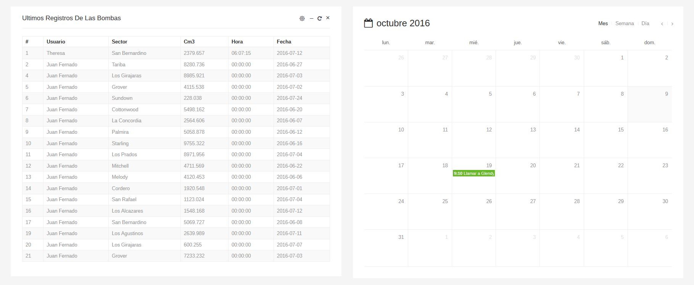
-Las notas son pequenos fracmentos de texto en los que puedes apuntar alguna mini tarea personal, las notas que generas como usuario solo pueden ser vista y administradas por su creador
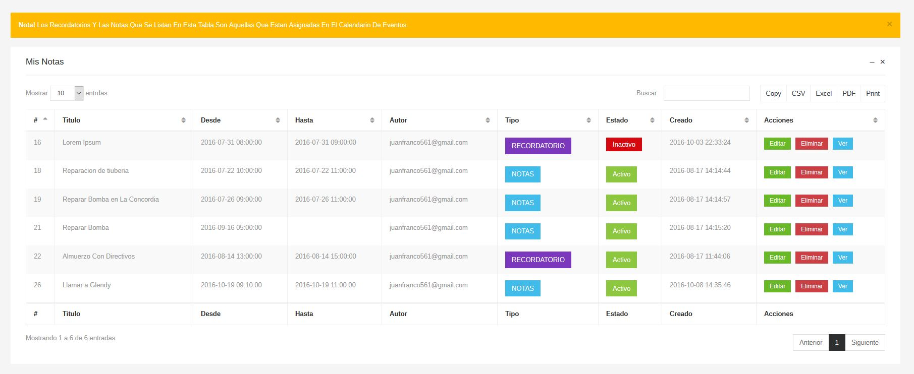
-Tambien podemos encontrar otra categoria dentro de las notas que se llaman recordatorios, estos recordatorios tienen como papel principal crear una bitacora de posibles apuntes, que puedan ser usados en un futuro no muy lejano.
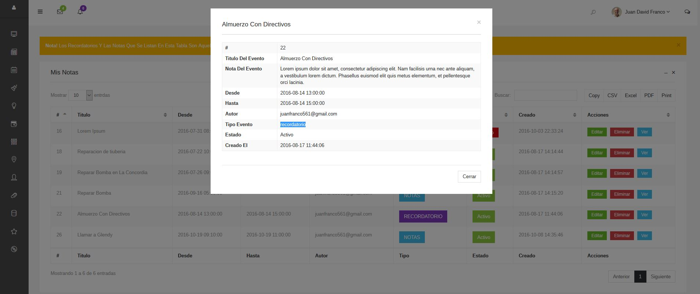
Para generar eventos de tipo Nota o Recordatorio solo tienes que llenar el formulario que aparece en la parte lateral Izquierda de el calendario de eventos, hay te va a pedir
1. Titulo del evento,
2. Tipo de evento si es nota o recordatorio,
3. Fecha Desde Hasta Tener encuenta: en caso de ser de tipo (Nota) puedes dejar en blanco el campo de fecha Hasta
4. Contenido Del Evento
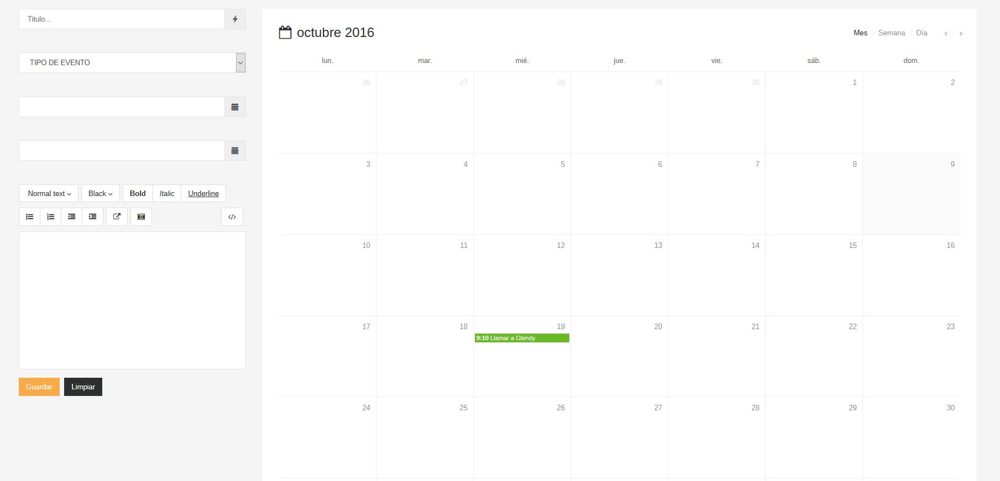
Una tarea es una labor u ocupación. que se le asigna a un usuario en particular un usuario puede asignar tareas a a varios usuarios y los demas usuarios me pueden asignar tarea ami como usuario del sistema.
las tareas que son creadas por mi tiene la particularidad que solo yo tengo los privilegios de dichas tareas, es decir solo yo puedo ver, editar y borrar
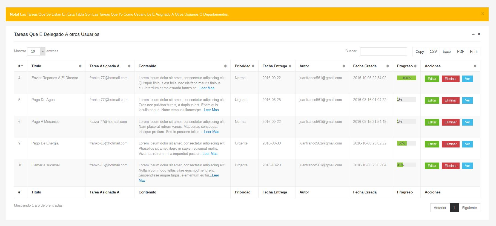
las tares que me han delegado otros usuarios ami apareceran en la siguiente tabla estas tareas solo es editables el campo de progreso ya que con esto se evita la alteracion de dicha tarea
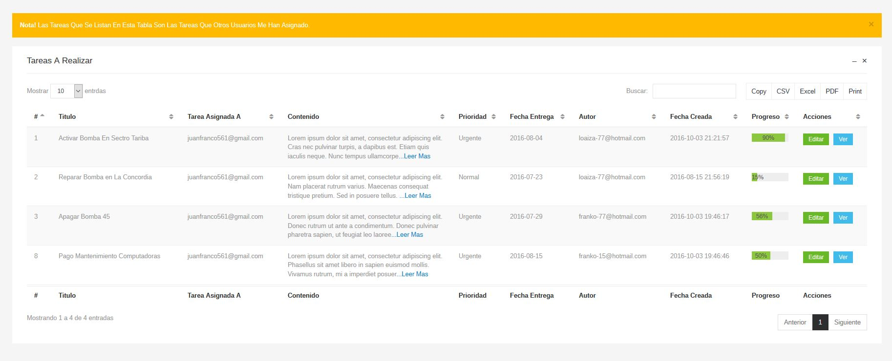
para asignar una tarea basta solamente con llenar el formulario el cual es muy intuitivo ya que se piden campos muy basicos y sin mayor complejidad como
1. Titulo De La Tarea
2. Asignar Tarea A
3. Contenido De La Tarea
4. Prioridad
5. Fecha De Entrega
Nota: todas la tareas tiene un progreso el cual inicializa en 1%, dicho progreso solo podra ser modificado por el receptor de la tarea
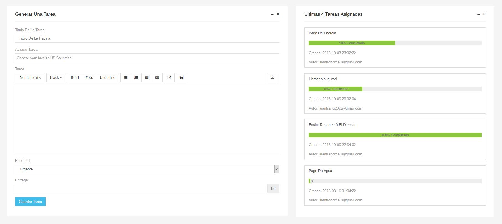
La estadistica generada en este sistema esta totalmente relacionada con los datos que se recojen de los sectores en los cuales se activo el sistema de bombeo,
Consumo total por sectores en Centimetros -3
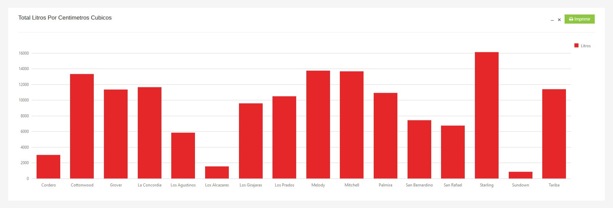
Consumo mensual en Centimetros-3 por sectore
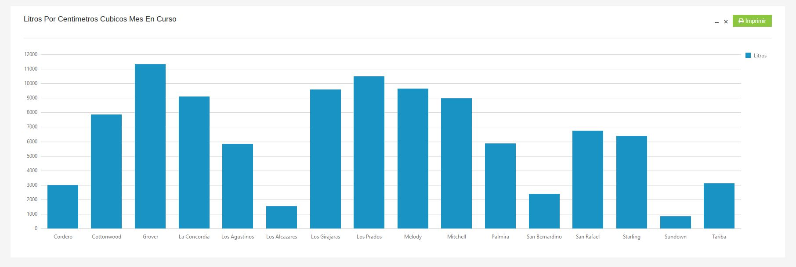
Consumo por sectores calculando Porcentaje de consumo
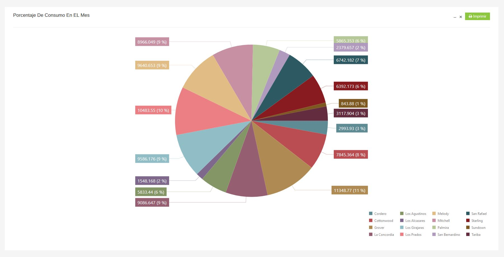
El gestor de archivos te permitemantener de forma directa y segura tus archivos pdf,docx,xml,html,jpg,png entre otros tambien puedes administrar tus carpetas y personalizarlas
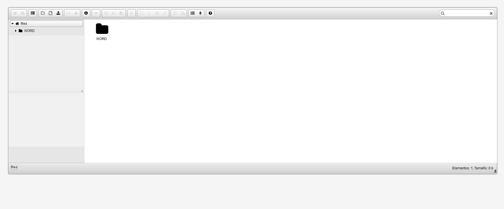
El generador reportes te permite de forma muy sencilla listar los registros generados por el consumo de agua por sectores.
1. Fecha inicial (Desde)
2.Fecha finala (Hasta)
3. Ordenar segun Su (ID, Fecha o Sector)
4. Ordenar De Forma (Descendente o Ascendente)
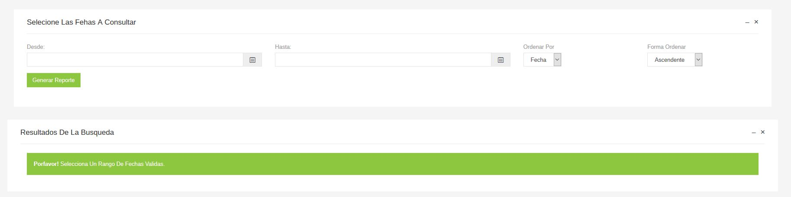